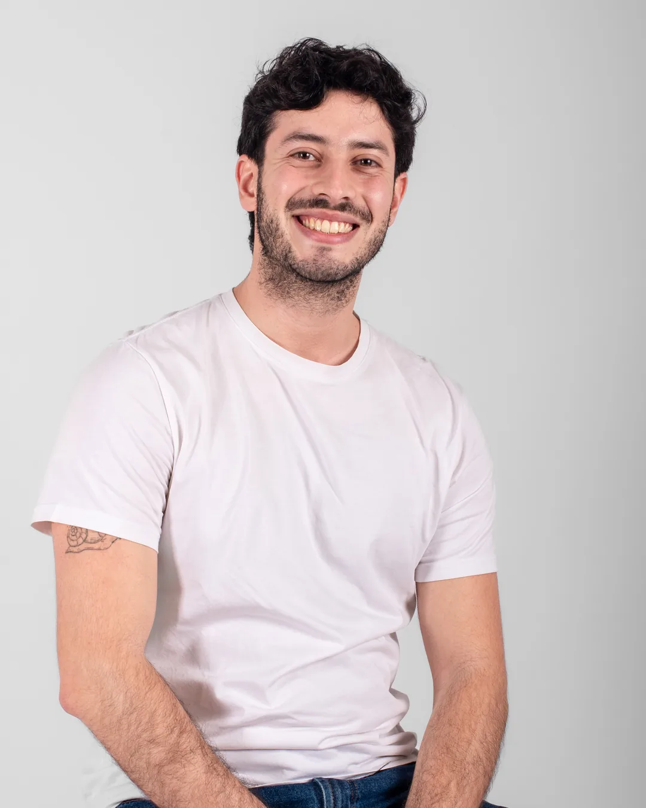
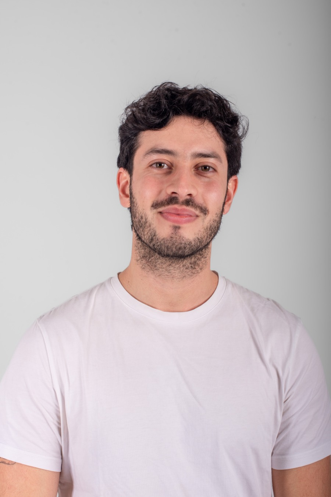

Nutricionista de hábitos · Alimentación a base de plantas · M.N. 12964
En 90 días ordenás tu semana, cubrís lo que necesitás y lo sostenés sin culpa. Con un nutricionista que también come a base de plantas.
No es una dieta ni una lista de prohibidos. Es aprender a armar tu plato y tu semana para que funcionen solos.
30 minutos · por videollamada · desde cualquier país

Para vos
30 minutos para ver si el Método es para vos.
Método Sustento · 90 días
Un proceso 1:1 de 90 días, por videollamada, desde cualquier país. Cada etapa tiene su foco.
BasesSemanas 1 y 2
Arrancamos con una consulta de indagación profunda: tu contexto, tu rutina, tu estilo de vida. Salís con prioridades claras y un Plan de Acción para experimentar y conocerte: qué te funciona y qué te frena.
Lijado finoSemanas 3 a 8
Queda claro qué funciona, y qué no es momento de priorizar porque hay otras cosas que suman más.
AutonomíaSemana 9 al cierre
No algo que hacés porque estás conmigo. Hacemos un pre-mortem: qué tendría que pasar para que todo esto se caiga, y cómo lo sostenés si llega una crisis.
Es lo habitual, no una promesa. Cada proceso tiene su ritmo, y en la primera consulta te digo qué esperar en tu caso.
«No dudes. Todo lo que no arrancás es tiempo perdido.»
Alexis · Proceso de 90 días
Un proceso 1:1 para comer a base de plantas sin dudar, a tu ritmo y sin dietas.
Sin cargo · 30 minutos · Sin compromiso
Pago único o tres cuotas. El valor lo charlamos en la llamada, con todo sobre la mesa.
Punto de llegada
Lo que dicen
Quién te acompaña
Soy Guido, nutricionista de hábitos (M.N. 12964). Como a base de plantas y acompaño a personas que quieren hacerlo bien: cubrir lo que necesitan, ordenarse y sostenerlo.
Ahí es donde trabajamos. Todo en línea, sin restricciones y sin foco en el peso.

"Al final de los 90 días no necesitás que nadie te diga cómo comer. Ya lo sabés."— Guido Sustento, Nutricionista
Antes de reservar
Preguntas frecuentes
No. Trabajo con alimentación a base de plantas: si ya comés así, lo afinamos; si querés ir hacia ahí, lo hacemos a tu ritmo.
La B12 se suplementa siempre en una alimentación a base de plantas. El resto depende de tus análisis, y los vemos juntos.
Sí. Armamos tu plato para que la proteína te alcance según cómo entrenás.
El Método está pensado para semanas reales: bases que se preparan una vez y resuelven varios días.
Casi siempre el problema no es la información sino llevarla a tu rutina. Por eso el foco está en los hábitos y en el acompañamiento entre consultas.
Es parte del proceso. Lo hablamos y ajustamos el plan; no se empieza de cero.
Sí, todo es en línea y podés pagar en dólares. Si llegaste buscando un nutriólogo, es la misma profesión que acá llamamos nutricionista: cambia la palabra según el país, no el trabajo.
Pago único o tres cuotas. El valor lo charlamos en la llamada, con todo sobre la mesa.
El primer paso
Tenemos una videollamada de 30 minutos. Este es el paso a paso:
¿Todavía no es tu momento?
Llevate el Mini Recetario gratis y, si querés seguir aprendiendo de a poco, sumate al Club.
Test · 30 segundos
Membresía mensual
🔁 Suscripción recurrenteUn espacio de suscripción mensual con recetas nuevas y seminarios en formato largo. Para seguir aprendiendo a cocinar rico, comer con placer y sostener los cambios en el tiempo.
Las dos son la misma membresía mensual y la cancelás cuando quieras. Elegí la moneda que te convenga.
Si pagás en pesos: MercadoPago no te manda la invitación a la comunidad como hace Whop. Cuando te suscribas,
mandame el comprobante por WhatsApp
con tu número y te paso la invitación yo mismo.